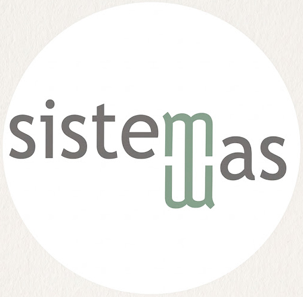

Soluciones Informáticas, Desarrollo de Software y Tutoriales
Bienvenido a la página oficial de Sistemas WAS. Este espacio está dedicado a compartir conocimientos sobre el desarrollo de aplicaciones, programación y bases de datos. El objetivo principal es brindar herramientas y soluciones prácticas tanto en el desarrollo de software de escritorio como en aplicaciones móviles.
Creación de aplicaciones para Android nativas utilizando Java y Android Studio. Migración de proyectos y optimización de código fuente.
Desarrollo de sistemas complejos, arquitectura orientada a objetos en Clarion 9.1 y generación eficiente de reportes para grandes volúmenes de datos.
Descarga la aplicación de manera gratuita y segura en la tienda oficial:
📱 Descargar en Google Play
La intención de esta aplicación es que los instructores bíblicos tengan en sus manos la posibilidad de compartir un estudio bíblico de forma sencilla, pero profunda. Cada uno de los 33 estudios tiene todas las citas bíblicas que se necesitan.
Descarga la aplicación de manera gratuita y segura en la tienda oficial:
Recordatorio de Oración es una herramienta sencilla y práctica diseñada para ayudarte a mantener presente tu vida espiritual y organizar tu lista de intercesión.
Descarga la aplicación de manera gratuita y segura en la tienda oficial:
Encuentra guías paso a paso, análisis de código y soluciones prácticas de programación.
▶ Visitar Canal de YouTube